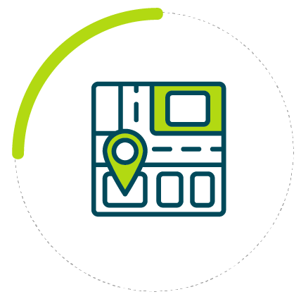
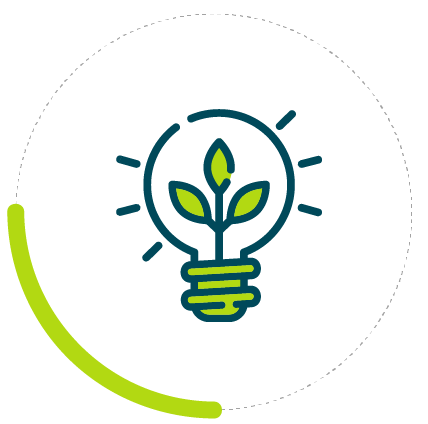

21

Sustainable Urban Planning
Solutions for cities and buildings to reduce costs, enhance resilience, and improve environmental performance.

Climate & Environmental Studies
Rigorous analytical modeling, environmental impact evaluations, and strategic investment roadmaps.
Public Policies & Capacity
Policy design, emissions reduction planning, and interactive stakeholder capacity-building workshops.
Nuestra Misión
CAPSUS busca hacer de las ciudades espacios que otorguen mejor calidad y nivel de vida con un menor impacto ambiental, asegurando que cada proyecto contribuya activamente al desarrollo sustentable.
Ayudamos a nuestros clientes a construir un mejor futuro y proteger su capital mediante decisiones informadas que integran desarrollo económico, inclusión social, eficiencia y protección ambiental.
Nuestros Valores: Corresponsabilidad | Compromiso | Crecimiento | Creatividad | Credibilidad
Nuestro Impacto
PAÍSES
4
CONTINENTES
+300
CIUDADES
Lo que dicen nuestros aliados
“Concretar un instrumento como el Plan de Acción Climática Municipal… ha enriquecido la capacidad del equipo local, para estructurar, definir y proyectar acciones de mitigación y adaptación esenciales en distintos plazos.”
— Dra. Beatriz Martínez Sánchez, Directora General del Instituto Municipal de Planeación de Bahía de Banderas, Nayarit.
“This project made some kind of mind-shifting for me… I think in this project we have moved from traditional urban planning which depends on efficiency to a balanced urban planning taking into consideration the environmental, social, and economic aspects.”
— Mohammed Zawahreh, Head of the Local Development Unit, Zarqa Municipality, Jordan.